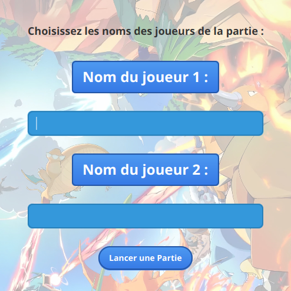

SAE 2.02 : Pokémon TCG
Académique

Contexte du projet
Ce projet a été réalisé dans le cadre d’une SAÉ du BUT Informatique, en binôme, sur une durée d’environ deux mois.
Le développement s’est déroulé en deux phases :
- une première phase dédiée à la logique métier (règles du jeu, gestion des cartes, attaques, effets)
- une seconde phase consacrée à la création de l’interface graphique avec JavaFX
Les contraintes principales étaient :
- utilisation de Java pour toute la logique applicative
- utilisation de JavaFX pour concevoir une interface graphique interactive
- respect des règles fondamentales du jeu Pokémon TCG
- conception d’une application modulaire et maintenable, avec une séparation claire entre logique métier et interface (architecture de type MVC)
L’objectif était de produire une application jouable, intuitive et fidèle à l’univers du jeu.
Contribution personnelle
J’ai contribué de manière significative au développement du projet, en intervenant à la fois sur la logique métier et sur l’interface graphique.
Sur la partie interface, j’ai implémenté les vues et contrôleurs JavaFX, en mettant en place la gestion des interactions utilisateur (clics, actions de jeu) ainsi que des animations de cartes afin de rendre l’expérience plus dynamique. J’ai également travaillé sur les bindings JavaFX, permettant de synchroniser automatiquement les données et l’interface pour assurer une meilleure fluidité.
Sur la partie métier, j’ai participé à l’implémentation des mécaniques de jeu, notamment certaines attaques et effets de cartes.
Enfin, j’ai contribué à la validation du projet à travers la mise en place de tests, afin de garantir le bon fonctionnement des différentes mécaniques du jeu et d’assurer la cohérence globale de l’application.
Ce que j’ai appris
Ce projet m’a permis de renforcer mes compétences en développement d’applications avec interface graphique, en particulier avec JavaFX.
J’ai appris à concevoir une interface utilisateur interactive et réactive, en utilisant les bindings et la gestion des événements, tout en prenant en compte des enjeux d’ergonomie et d’expérience utilisateur.
Sur le plan technique, j’ai également consolidé ma capacité à structurer une application de manière modulaire, en séparant clairement la logique métier de l’interface, et à appliquer des bonnes pratiques de conception et de programmation.
Le travail sur les mécaniques du jeu m’a amené à manipuler des données variées et complexes (cartes, effets, états du jeu), tout en garantissant leur cohérence, ce qui m’a permis de mieux comprendre les enjeux liés à la gestion des données dans une application.
Enfin, la mise en place de tests m’a sensibilisé à l’importance de la validation du comportement d’une application, afin d’assurer sa fiabilité et sa qualité.
Traces du projet
